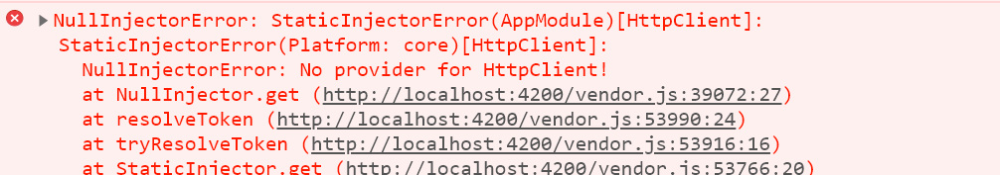

Este tutorial lo guía, usando VSCode, en la construcción de una aplicación Angular compuesta del módulo principal y de un módulo llamado BookModule el cual declara un componente BokkListarComponent para desplegar el catálogo de libros que está en la aplicación del curso backstepbystep.
Los pasos que siguen son:
El resultado final del tutorial es una aplicación que despliega la siguiente lista (Figura 1):
Figura 1
Antes de realizar este tutorial Ud. ya desarrolló el tutorial Lista de cursos. Allí se explican varios conceptos que no se retoman aquí.
En particular Ud. debe:
- Tener instalado el ambiente: VSCode, TS, Angular
- Saber cómo se instala Bootstrap en el proyecto
- Saber cómo se crean módulos, componentes, servicios utilizando el angular-cli en VSCode.
Para ejecutar el resultado final de este taller Ud. debe tener en ejecución sobre payara, el proyecto backstepbystep. No olvide inicializar la base de datos y ejecutar el sql que inserta los datos.
Paso 1: Crear el proyecto
Cree una aplicación Angular que se llame, por ejemplo, book, siguiendo las instrucciones que se encuentran aquí.
Abra su aplicación en VSCode borre el contenido del archivo app.component.html.
Paso 2: Crear un nuevo módulo
Para crear el nuevo módulo utilizamos la aplicación angular-cli que está integrada dentro de VSCode.
Para esto, vaya a la carpeta src/app, clic derecho, Generate Module. El nombre del nuevo módulo es book.
Paso 2: Borre el componente por defecto
Al crear el nuevo módulo book, se generó un componente por defecto BookComponent.
Para eliminar ese componente que no vamos a utilizar debe borrar los siguientes archivos:
book.component.ts
book.component.css
book.component.html
Borre referencias a este componente en el archivo book.module.ts que debe quedar así:
import { NgModule } from '@angular/core';
import { CommonModule } from '@angular/common';
@NgModule({
imports: [
CommonModule
],
declarations: []
})
export class BookModule { }Paso 3: Incluir el nuevo módulo en el principal
Para que la aplicación pueda utilizar el nuevo módulo, este se debe importar en el módulo principal AppModule (archivo app.module.ts).
Para importar en el módulo principal el módulo de BookModule se debe realizar dos cosas:
- Ir al decorador e incluir en el arreglo del atributo
importsel nombre del módulo, es decir, de la claseBookModule
- Incluir el nombre del archivo donde está la definición (esto debió hacerse automáticamente si Ud. tiene las extensiones de Angular instaladas):
import { BookModule } from './book/book.module';
Paso 4: Crear el componente de listar
Vaya sobre la carpeta del módulo src/app/book, clic derecho Generate Component y escriba por nombre book-listar.
Dentro de la carpeta src/app/book se debió crear:
Paso 5: Declarar y exportar el componente en el módulo
- Vaya al módulo
BookModule(book.module.ts) y agregue en el decorador, en el atributo declarations, el nombre del nuevo componenteBookListarModule. - Agregue un nuevo atributo en el decorador llamado exports cuyo valor es un arreglo que contiene el nombre del nuevo módulo (lo exportamos porque lo vamos a utilizar desde el componente principal de la aplicación).
- Verifique que el archivo donde está definido el módulo se agregó en los import al comienzo.
El resultado es:
import { NgModule } from '@angular/core';
import { CommonModule } from '@angular/common';
import { BookListarComponent } from './book-listar/book-listar.component';
@NgModule({
imports: [
CommonModule
],
declarations: [BookListarComponent],
exports: [BookListarComponent],
})
export class BookModule { }Paso 6: Invocar el componente
Para invocar el componente de los libros dentro del HTML del componente principal.
- Buscamos el nombre del selector de
BookListarComponent. Vamos al archivobook-listar-component.tsy en del decorador del componente buscamos el valor del atributoselector. - Lo utilizamos en
app.component.html. Escríbalo en la segunda línea.
Volvemos a ejecutar la aplicación y obtenemos.
Definir el Modelo del componente
Paso 1: Definir la estructura del modelo
Crear la clase Book
Crear la clase Editorial
crear el módulo, asociarlo con el módulo principal
crear la clase Editorial
Paso 2: Asociar el modelo con el componente
Ahora que tenemos la clase que representa los libros, podemos declarar, dentro de la clase del componente, un arreglo para los libros:
private books: Array<Book>; Nos aparece que Course no está definido, entonces debemos importarlo:
import { Component, OnInit } from '@angular/core';
import { Book } from '../book';
@Component({
selector: 'app-book-listar',
templateUrl: './book-listar.component.html',
styleUrls: ['./book-listar.component.css']
})
export class BookListarComponent implements OnInit {
constructor() { }
private books: Array<Book>;
ngOnInit() {
}
}Paso 1: Crear la clase del servicio
Vamos a crear la clase del servicio desde la carpeta book. De nuevo usamos angular-cli y seleccionado Generate Service. Como nombre solo escribimos book.
El archivo generado resultado es:
import { Injectable } from '@angular/core';
@Injectable({
providedIn: 'root'
})
export class BookService {
constructor() { }
}
Ahora vamos a inyectar el servicio definido por angular HttpClient. Inyectamos ese servicio declarando en el constructor e importando el archivo de la clase correspondiente:
import { HttpClient } from '@angular/common/http';
...
export class BookService {
constructor(private http: HttpClient) { }
...
}Antes de seguir, vamos al módulo principal AppModule e importamos (en el atributo imports del decorador del módulo, HttpClientModule. Debe quedar de la siguiente forma:
import { BrowserModule } from '@angular/platform-browser';
import { NgModule } from '@angular/core';
import { HttpClientModule } from '@angular/common/http';
import { AppComponent } from './app.component';
import { BookModule } from './book/book.module';
import { EditorialModule } from './editorial/editorial.module';
@NgModule({
declarations: [
AppComponent
],
imports: [
BrowserModule,
HttpClientModule,
BookModule,
EditorialModule
],
providers: [],
bootstrap: [AppComponent]
})
export class AppModule { }Paso 2: Configurar la URL del back-end
Para esto se necesita conocer la url donde está el servidor que provee los libros (el back-end).
El valor de la url de base donde se encuentra el back-end lo vamos a declarar dentro del archivo environment.ts que está en la carpeta environments:

Definimos la url del back-end, suponiendo que el back-end está en el localhost y que se ejecuta en el 8080:
export const environment = {
production: false,
host: 'localhost',
port: '8080',
appName: 'frontstepbystep-api',
rootApi: 'api',
baseUrl:`http://${this.host}:${this.port}/${this.appName}/${this.rootApi}/`
};
Paso 3: Definición de la función http get en el servicio
En la clase del servicio, declaramos una función getBooks() va a utilizar el servicio http para invocar el http.get. Como ya explicamos, estas funciones de http retornan objetos Observable. Entonces la declaración completa de la función es:
getCourses(): Observable<Book[]> {
return this.http.get<Book[]>(this.apiUrl);
}Debemos importar el archivo de Observable y el archivo de Book.
El código completo del servicio es el siguiente:
/src/app/book/book.service.ts
import { Injectable } from '@angular/core';
import { HttpClient } from '@angular/common/http';
import { Observable } from 'rxjs';
import { Book } from './book';
import { environment } from '../../environments/environment';
@Injectable({
providedIn: 'root'
})
export class BookService {
private apiUrl = environment.baseUrl + 'books';
constructor(private http: HttpClient) { }
getCourses(): Observable<Book[]> {
return this.http.get<Book[]>(this.apiUrl);
}
}
Nuestro componente debe ahora llamar la función creada en el servicio. Tenemos que hacer varias cosas:
- Declarar el servicio para que Angular lo inyecte y podamos usar la función
- Invocar la función que retorna un
Observable.
Para poder usar el servicio en el componente necesitamos declararlo en el constructor e importar el archivo, el fragmento de código donde está esta declaración es:
...import { BookService } from '../book.service';
@Component({
selector: 'app-book-listar',
templateUrl: './book-listar.component.html',
styleUrls: ['./book-listar.component.css']
})
export class BookListarComponent implements OnInit {
constructor(private bookService: BookService) { }
...
}Ahora declaramos el método del componente getBooks() así:
getBooks(): void {
this.bookService.getBooks()
.subscribe(books => {
this.books = books;
});
}
- Invocamos la función anterior, en el método
ngOnInitpara que cuando se cree el componente de listar, se llame el back-end para traer los datos de los libros.
ngOnInit() {
this.getBooks();
}El código completo del componente se puede ver aquí:
/src/app/book/book.component.ts
import { Component, OnInit } from '@angular/core';
import { Book } from '../book';
import { BookService } from '../book.service';
@Component({
selector: 'app-book-listar',
templateUrl: './book-listar.component.html',
styleUrls: ['./book-listar.component.css']
})
export class BookListarComponent implements OnInit {
constructor(private bookService: BookService) { }
private books: Array<Book>;
getBooks(): void {
this.bookService.getBooks()
.subscribe(books => {
this.books = books;
});
}
ngOnInit() {
this.getBooks();
}
}Como ya hemos explicado, la vista es el HTML asociado con el componente. El objetivo es desplegar la lista de cursos en una tabla.
Paso 1: El encabezado
El siguiente código muestra una tabla y su encabezado. Note que el archivo contiene sólo la parte de HTML que se va a desplegar. No es un archivo completo HTML, no tiene las etiquetas head y tampoco body.
<div class="container-fluid">
<div class="col-6">
<table class="table">
<thead>
<tr>
<th class="h4">Course's Name</th>
<th class="h4">Professor's Name</th>
<th class="h4">Credits</th>
</tr>
</thead>
<tbody>
</tbody>
</table>
</div>
</div>
El contenido dinámico de la tabla lo vamos a crear al interior de las etiquetas:
<tbody>
</tbody>Angular ofrece una serie de extensiones a HTML, representadas en nuevas etiquetas y nuevos atributos para facilitar la construcción del contenido dinámico de la página.
En este ejemplo vamos a ver dos de estas extensiones:
- Cómo escribir un ciclo dentro de HTML
- Cómo acceder a un valor de un objeto para que quede desplegado en el HTML
Un ciclo dentro de HTML
La instrucción es un atributo que se define sobre la etiqueta donde queremos que empiece el ciclo. El ciclo termina donde esa misma etiqueta se cierra.
La forma general es:
*ngFor="let iter of coleccion"
Donde:
iteres una variable local al ciclocolecciones un atributo que DEBE estar definido en el componente (es parte dell modelo)
Así, en nuestro código, queremos construir una fila de la tabla, etiqueta tr, por cada elemento en el arreglo courses que definimos en el componente.
La variable c es el iterador del ciclo que va tomando el valor de cada elemento desde principio a fin.
<tr *ngFor="let c of courses">
// Cuerpo del ciclo
</tr>En el cuerpo del ciclo queremos desplegar los datos de cada elemento. Para desplegar un valor de un objeto, utilizamos la expresión {{ objeto }}.
Veamos el ejemplo:
<tr *ngFor="let c of courses">
<td>
<dd>{{c.name}}</dd>
</td>
<td>
<dd>{{c.professor}}</dd>
</td>
<td>
<dd>{{c.credits}}</dd>
</td>
</tr>Así, el resultado de la aplicación hasta ahora es:
Paso 6: Ejecutar la aplicación y resolver el error
Al ejecutar la aplicación nos aparece el siguiente error en la consola.

Esto se debe a que en el caso del servicio HttpClient que estamos utilizando en el servicio CourseService, no es suficiente con inyectarlo e importar la clase. Debemos también hacer una importación del módulo en el módulo principal de la aplicación. Así:
src/app/app.module.ts
import { BrowserModule } from '@angular/platform-browser';
import { NgModule } from '@angular/core';
import { HttpClientModule } from '@angular/common/http';
import { AppComponent } from './app.component';
import { CourseModule } from './course/course.module';
@NgModule({
declarations: [
AppComponent
],
imports: [
BrowserModule,
CourseModule,
HttpClientModule
],
providers: [],
Bootstrap: [
AppComponent
]
})
export class AppModule { }De nuevo podemos ejecutar la aplicación y obtener el resultado esperado. Note que hay muchos más datos en este resultado.